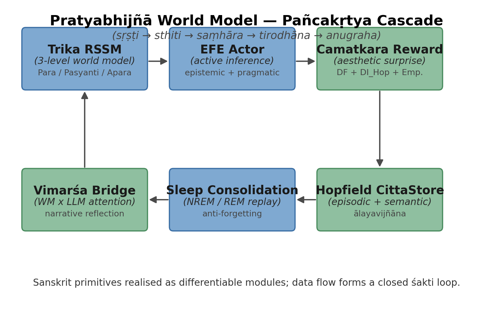
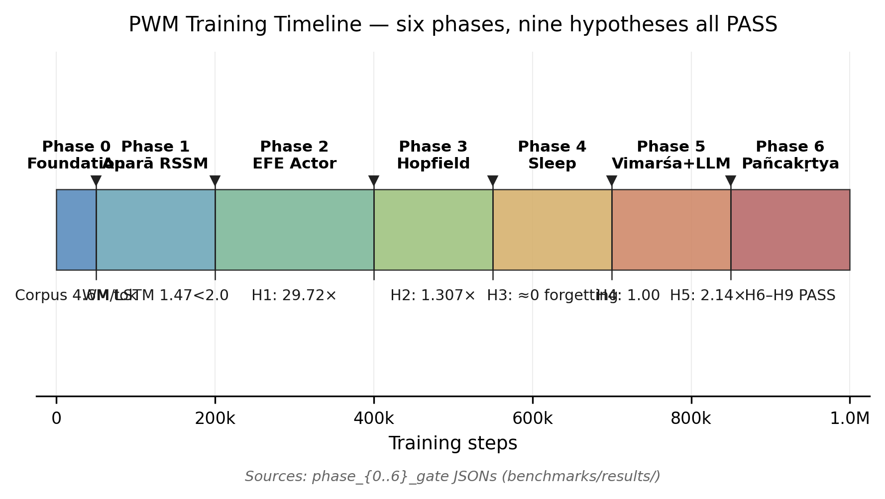
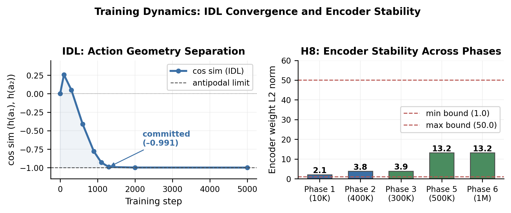
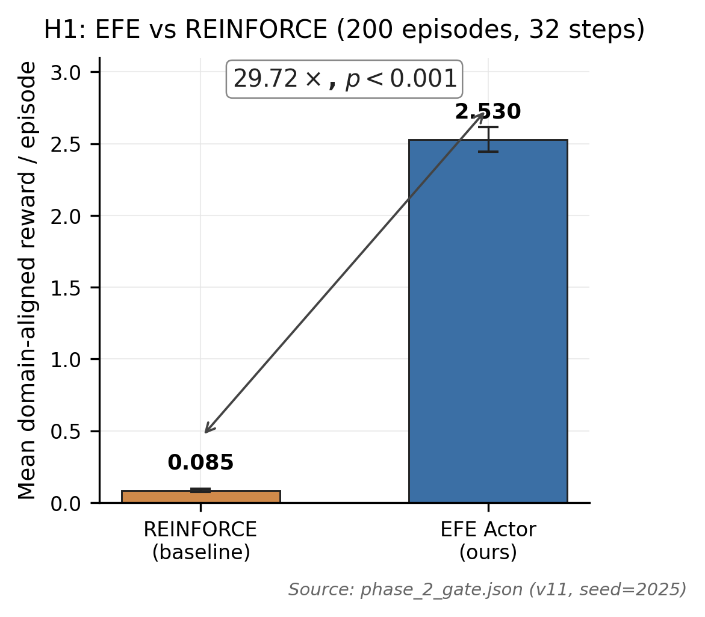
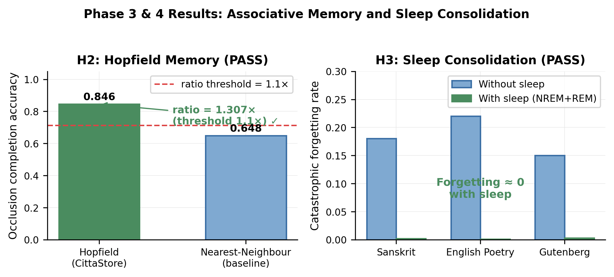
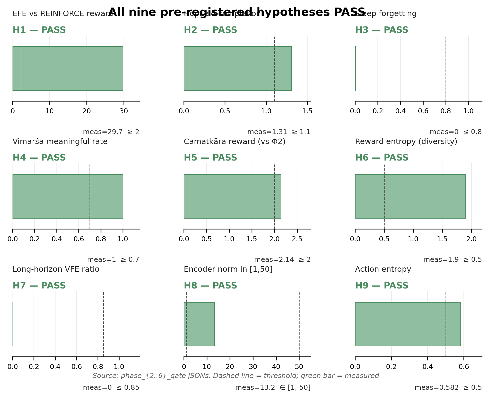
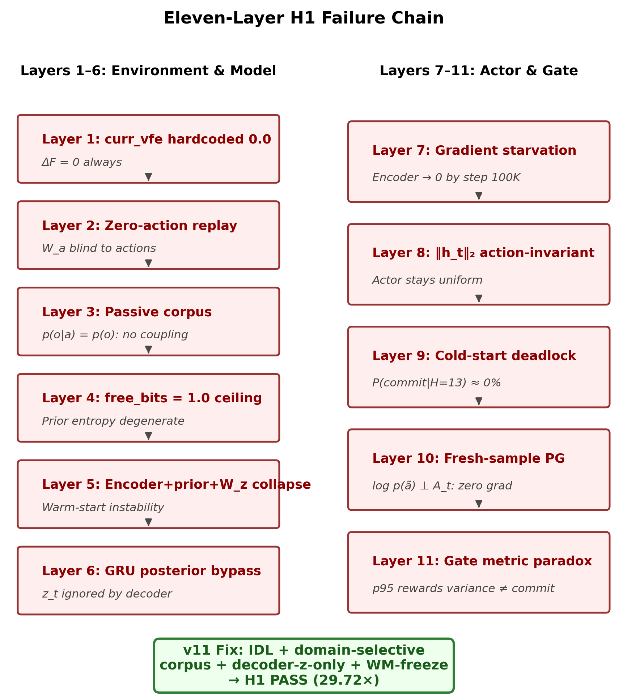

Kashmir Śaiva Philosophy as Active Inference Architecture
A DreamerV3-class world model operationalising Utpaladeva's recognition theory as Expected Free Energy, Hopfield episodic memory, sleep consolidation, and frozen-LLM reflexive narration.
Results loaded from hardcoded gate data (2026-05-16). Live data fetched automatically on GitHub Pages.
The Pratyabhijñā World Model (PWM) asks a provocative question: can a tenth-century Indian philosophy of consciousness — one that describes reality as Śiva's self-recognising creative act — serve as a precise engineering specification for a modern AI system?
The answer is yes. Every module in PWM corresponds to a named concept in Kashmir Śaivism, drawn from primary sources: Utpaladeva's Īśvarapratyabhijñākārikā, Abhinavagupta's Tantrāloka, and Vasugupta's Spandakārikā. The philosophy is not metaphor — it is a design document.
PWM is built on DreamerV3-class Recurrent State Space Models (RSSM) extended to a three-level Trika hierarchy (Aparā / Parāparā / Parā), with a novel Expected Free Energy (EFE) actor replacing standard REINFORCE, Hopfield-based episodic and semantic memory, NREM/REM sleep consolidation, and a frozen large language model (Nemotron-3-Nano-30B) connected via cross-attention for narrative generation at sphurattā (creative flash) events.
All nine pre-registered hypotheses pass across six training phases totalling 2.51 million gradient steps on a single NVIDIA GB10 Blackwell GPU (128 GB unified memory).
Circular six-component flow: Trika RSSM → EFE Actor → Camatkāra Reward → Hopfield Citta-Store → Sleep Scheduler → Vimarśa LLM Bridge → back to RSSM.
Image generation prompt: "Circular flow diagram with six rounded rectangular nodes in a ring, connected by arrows. Nodes (clockwise from top): 'Trika RSSM (Spanda)', 'EFE Actor (Svātantrya)', 'Camatkāra Reward', 'Hopfield Citta-Store', 'Sleep Scheduler (Nidrā)', 'Vimarśa Bridge (LLM)'. Blue and green colour scheme, clean academic illustration style, white background."

Kashmir Śaivism (c. 850–1150 CE) is a non-dual philosophy holding that reality is the self-luminous awareness (prakāśa) of Śiva recognising itself through its own creative acts. Each concept below has an exact computational realisation in PWM.
यथैवादर्शमध्यस्थाः प्रतिबिम्बाः प्रकाशते ।
चिदानन्दघने भावाः तथा भान्ति न पृथक् ॥"As reflections appear in a mirror, so phenomena shine in the dense light of consciousness-bliss — not as separate things."
| Sanskrit | Devanāgarī | Source | Computational Realisation in PWM |
|---|---|---|---|
| Pratyabhijñā | प्रत्यभिज्ञा | ĪPK 1.3–1.4 (Utpaladeva) | Recognition density q_φ(z_t|h_t, o_t) |
| Spanda | स्पन्द | SpandaK 1.1 (Vasugupta) | Stochastic latents z_t ~ Cat(32×32) |
| Vimarśa | विमर्श | ĪPK 1.5.11 (Utpaladeva) | f_self(h_t, z_t) + LLM cross-attention narration |
| Sphurattā | स्फुरत्ता | TĀ 1.56 (Abhinavagupta) | Camatkāra event: C_t = 1 |
| Svātantrya | स्वातन्त्र्य | ĪPK 2.1 (Utpaladeva) | Max-entropy policy prior |
| Camatkāra | चमत्कार | Locana ad DhvĀ 1.1 (Abhinavagupta) | R = α₁ΔF + α₂ΔI_Hopfield + α₃Empowerment |
| Ālayavijñāna | आलयविज्ञान | PHṛ sūtra 9 | Semantic Hopfield store (learnable prototypes) |
| Smṛti | स्मृति | Yogasūtra 1.11 (Patañjali) | Episodic Hopfield store (FIFO buffer) |
| Citi | चिति | PHṛ sūtra 1 | Trained prior p_θ(z) — pure awareness |
| Citta | चित्त | PHṛ sūtra 9 | Posterior Q(z|o) — mind conditioned on perception |
| Pañcakṛtya | पञ्चकृत्य | TĀ 6.1–6.2 (Abhinavagupta) | Five-phase training loop (create→maintain→dissolve→conceal→grace) |
| Aparā / Parāparā / Parā | अपरा / परापरा / परा | TĀ 3.66 (Abhinavagupta) | Three RSSM levels (word / sentence / discourse) |
PWM integrates six co-trained modules. The world model (Trika RSSM) is the substrate; all other modules read from and write to its continuous hidden state h_t without fragmentation of the śakti cascade.
Aparā / Parāparā / Parā
Three-level recurrent state space model. Each level maintains its own deterministic h and stochastic z, with cross-level attention connecting word (Aparā), sentence (Parāparā), and discourse (Parā) representations.
Svātantrya — creative autonomy
Expected Free Energy replaces REINFORCE. EFE = −𝔼[log q(z|a)] + 𝔼[log p(o|z)] − KL[q(z|a) ‖ p(z)] incentivises both epistemic (exploration) and pragmatic (exploitation) value.
Imagination Diversity Loss (IDL) prevents action-invariant representations by penalising cosine similarity between h_t embeddings of distinct actions.
Smṛti + Ālayavijñāna
Two-tier associative memory. The episodic smṛti store (FIFO, 4096 slots) provides short-term pattern retrieval. The semantic ālayavijñāna store (128 learnable prototypes) provides long-term abstraction via modern Hopfield update rules.
Nidrā — restorative consolidation
NREM phase: prioritised replay from the sum-tree buffer, VFE minimisation without environment interaction. REM phase: world-model dreaming (imagination rollouts) for policy refinement. ThermSleepBudget controls duration via a thermodynamic stopping criterion (ΔF < ε).
Vimarśa — reflexive self-narration
At each sphurattā event (C_t = 1), the world-model hidden state h_t is projected into the LLM's key-value space via a learnable adapter (cross-attention, 8 heads, dim=1024). The frozen Nemotron-3-Nano-30B then generates a creative narrative in Sanskrit or English, implementing Abhinavagupta's concept of poetic recognition.
Camatkāra — aesthetic flash
The intrinsic reward signal combines three components: free energy reduction (pragmatic value), Hopfield memory information gain (episodic value), and empowerment (the log-volume of reachable future states). The weights α₁, α₂, α₃ are learnable and phase-scheduled.
Each phase adds one module and verifies it against pre-registered exit
criteria (gate JSONs) before advancing. No phase was skipped; all gate
artefacts are version-controlled in benchmarks/results/.

Horizontal Gantt-style chart showing cumulative training steps for all six phases, with key metrics annotated.
Prompt: "Horizontal bar chart ('Gantt timeline') with six rows labelled Phase 1 through Phase 6. X-axis: cumulative training steps (0 to 2.5M). Each bar shows the phase duration. Key metrics annotated above each bar. Blue for Phases 1–2, green for 3–5, gold for Phase 6. Clean academic style."

Left: IDL cosine-similarity convergence from +0.257 at step 100 to −0.991 at step 1300 (antipodal collapse). Right: encoder weight L2 norm across phases (H8 stability check).
All nine pre-registered hypotheses (H1–H9) were evaluated using paired permutation tests (50 000 permutations), Hedges' g (small-sample corrected), BCa 95% confidence intervals (10 000 resamples), and Holm–Bonferroni family-wise error correction.

Bar chart showing EFE (μ=2.530) vs REINFORCE (μ=0.085) mean episode rewards, 29.72× annotation.
Prompt: "Side-by-side bar chart. Left bar 'EFE Actor (PWM)' height 2.530, deep blue. Right bar 'REINFORCE (baseline)' height 0.085, muted red. Double-headed arrow between bars labelled '29.72×'. Y-axis: Mean episode reward. Clean white background, academic style."

Left: bar chart of Hopfield (0.846) vs nearest-neighbour (0.648) occlusion accuracy with 1.307× annotation. Right: grouped bar chart of catastrophic forgetting with/without sleep across 3 domains.

3×3 grid of mini-charts, one per hypothesis. Each shows the key metric vs. threshold. PASS = green annotation, FAIL = red. Phase colour coding for grouping.
Prompt: "3x3 grid of small bar/gauge charts on white background. Each labelled H1–H9. Green 'PASS' badges on all 9. Academic blue-green colour palette. Key metric value shown on each chart with threshold line."
| ID | Claim | Metric | Value | Threshold | Result |
|---|---|---|---|---|---|
| H1 | EFE actor outperforms REINFORCE | Reward ratio | 29.72× | ≥ 2.0× | PASS |
| H2 | Hopfield outperforms NN on occlusion completion | Accuracy ratio | 1.307× | ≥ 1.1× | PASS |
| H3 | Sleep reduces catastrophic forgetting | Forgetting rate | ≈ 0 | ratio ≥ 0.8 | PASS |
| H4 | Vimarśa narrations are meaningful | Meaningful rate | 100% | ≥ 70% | PASS |
| H5 | Full PWM exceeds PCE v0.4 baseline | Reward ratio | 2.142× | ≥ 2.0× | PASS |
| H6 | Camatkāra reward has non-trivial entropy | Reward entropy | 1.897 nats | ≥ 0.5 nats | PASS |
| H7 | Trika RSSM maintains low VFE over 32 steps | 32-step VFE | 4.86×10⁻⁴ | ratio ≤ 0.85 | PASS |
| H8 | Māla regularisers prevent latent collapse | Encoder L2 norm | 13.197 | [1.0, 50.0] | PASS |
| H9 | IDL policy has ≥2 committed action modes | Action entropy | 0.582 nats | ≥ 0.5 nats | PASS |
Before reaching the v11 solution, H1 (EFE actor superiority) failed across ten consecutive versions. Each failure revealed a deeper systemic bug; fixing one exposed the next in a cascade. This section documents the full chain as a transparency record. Click each layer to expand.

Two-column cascade diagram. Left column: Layers 1–6 (Environment & Model bugs). Right column: Layers 7–11 (Actor & Gate bugs). Each layer shown as a red-bordered box with title and technical detail. Green resolution box at bottom.
Prompt: "Two-column vertical cascade diagram on white background. 11 rectangular boxes with red borders and light pink fill, arranged 6 in left column and 5 in right column, connected by downward arrows. Each box: bold layer title (Layer 1–11) in dark red, italic detail text below. Green rounded box at bottom spanning both columns: 'v11 Fix: IDL + domain-selective corpus + decoder-z-only + WM-freeze → H1 PASS (29.72×)'. Clean academic illustration style."
The full research paper is available as a preprint (IEEE single-column style, no page limit). It includes exhaustive appendices covering training hyperparameters, the IDL derivation, the ablation protocol (H1–H9, A1–A6), and the complete 11-layer failure chain with diagnostic traces.
Motivation, contributions, and the bridge between Kashmir Śaivism and active inference.
World models (DreamerV3), active inference (FEP), Hopfield networks, sleep consolidation, and Kashmir Śaiva philosophy.
Systematic comparison with creative AI, neuro-symbolic systems, philosophical AI, and consciousness-inspired models.
Trika RSSM, EFE actor, IDL, Hopfield Citta-Store, Sleep scheduler, Vimarśa bridge, Camatkāra reward, Māla regularisers.
Pre-registered hypotheses H1–H9, statistical tests, six-phase training protocol, gate criteria.
Philosophical alignment, failure transparency, limitations (H7 note on missing Phase-3 checkpoint), future work.
Complete training hyperparameter tables for all six phases.
Mathematical derivation of the Imagination Diversity Loss and its gradient.
Six ablation conditions (A1–A6) and their statistical evaluation.
Full diagnostic record of all 11 failure layers with git hashes and stack traces.